Este santuario está disponible desde que llegas a la región de la torre del cañón, y está situado justo al lado de la entrada a la Ciudadela Gerudo.
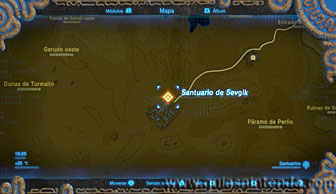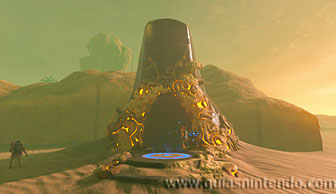
Dentro debes ir completando unos circuitos para hacer que la electricidad vaya abriendo puertas. Al comienzo puedes coger un gran bloque de metal y un barril en el lado izquierdo según entras. Coloca el barril en la conexión que se ve en la foto usando el imán (puedes cogerlo con las manos, pero al colocarlo y pasar la electricidad te dañaría).
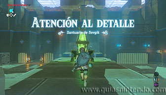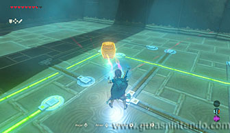
Después coloca el bloque grande en la conexión final, para terminar de completar el circuito y abrir la puerta de la izquierda.
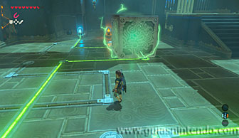
Coge el segundo barril de metal (que se encontraba tras esa puerta) y sácalo con el imán. Después colócalo en la primera conexión como se ve en la foto.
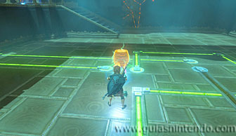
A continuación, coloca el bloque grande en la última conexión para completar este nuevo circuito. Así se abrirá la puerta que detrás escondía un cofre (con una Espada del rayo).
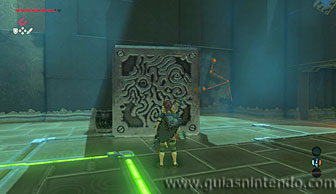
Ahora saca el cofre también con el imán y llévatelo al lado derecho de la sala. Haz lo mismo con los dos barriles y colócalos como se ve en la siguiente foto. Solo debes colocar cada elemento en una conexión para ir uniendo el circuito.
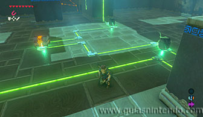
Ahora trae también el bloque grande de metal y mételo en el hueco que hay grande para completar el circuito y abrir la gran puerta en ese lado. Tras esa puerta hay otro bloque grande de metal, sácalo y colócalo en la esquina, completando el segundo circuito. Eso encenderá uno de los dos interruptores que necesitas para abrir el altar.
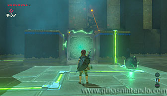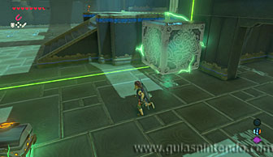
Ahora coge el primer bloque de metal y colócalo en la esquina opuesta al primero. Así conectarás el segundo interruptor.
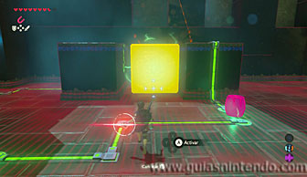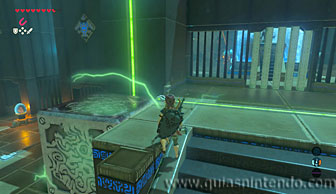
Ahora lo único que te queda es entrar en el santuario y dirigirte al altar para conseguir el símbolo de valía correspondiente.
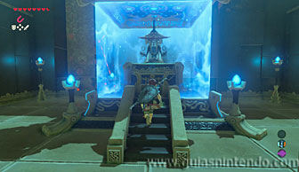